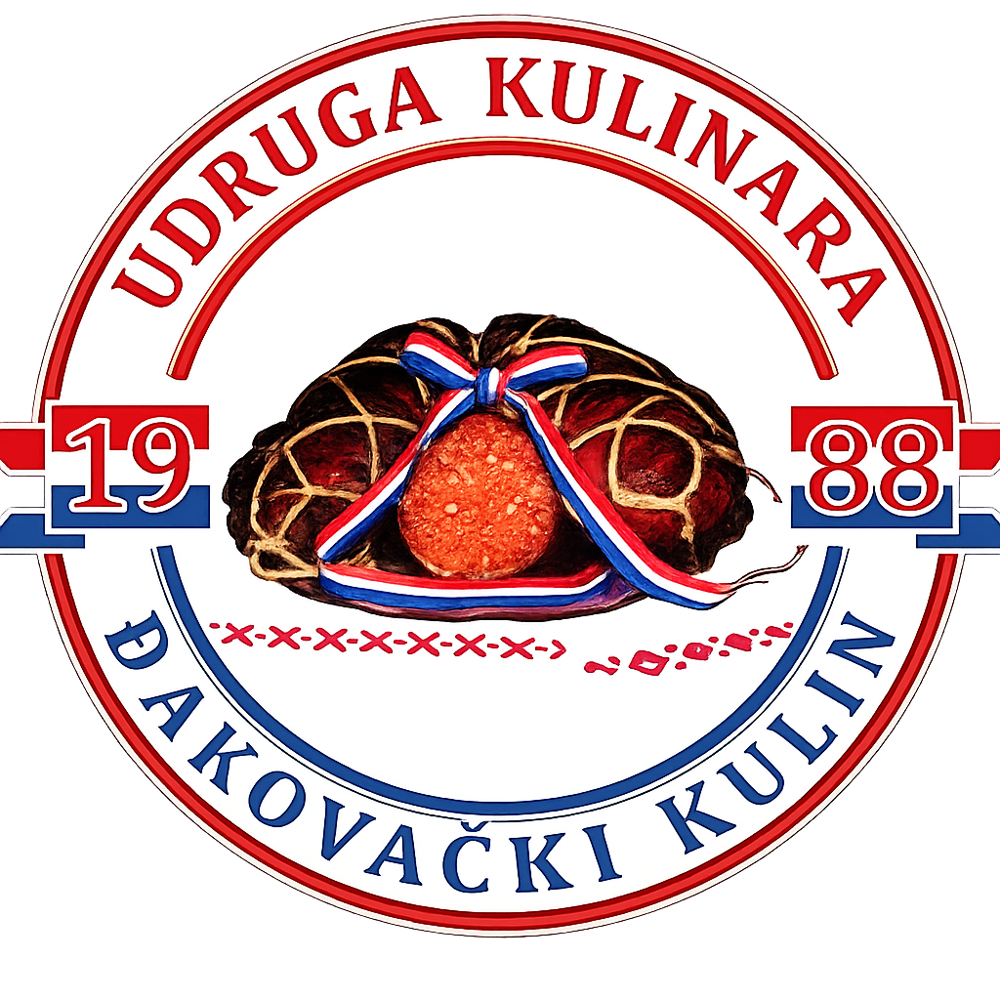

DOBRO DOŠLI NA STRANICE UDRUGE KULINARA
"ĐAKOVAČKI KULIN"

Čuvamo tradiciju slavonskog kulina i promičemo kvalitetu domaćih proizvoda već više od tri desetljeća.
Saznaj višeO nama
Udruga kulinara Đakovački Kulin
Drago mi je da vas mogu pozdraviti u ime Udruge kulinara „Đakovački kulin" i zaželjeti vam dobrodošlicu na web stranici kojom želimo Udrugu približiti, prezentirati i pozvati sve zainteresirane da se pridruže u radu Udruge.
Ovom stranicama želimo vam na transparentan način približiti rad Udruge, upoznati vas sa aktivnostima koje provodimo u ime i za korist članova i čitave naše zajednice.
Više od trideset godina u Đakovu se ocjenjuje kvaliteta slavonskog kulina. Prvi pisani trag o održavanju kulinijade u Đakovu datira još iz 1988. godine koja se održala u sklopu manifestacije „Dani vina i kulina", a pod pokroviteljstvom Večernjeg lista. Od 1990. godine pa do danas, kulinijada se održava u sklopu „Đakovačkih vezova".
Udrugu kulinara osnovalo je nekoliko entuzijasta, proizvođača i ljubitelja tradicionalnih delicija 2003. godine u Đakovu, sa željom da zaštite autohtonu, tradicionalnu proizvodnju suhomesnatih proizvoda. Udruga je registrirana kao Udruga kulinara „Slavonska gastronomija" sa sjedištem u Đakovu. Za prvog predsjednik Udruge izabran je gospodin Mato Šimunić iz Vinkovaca, a za tajnika je izabran gospodin Milan Šuša iz Osijeka. Udruga se osnovala sa ciljem da se što više malih proizvođača sa područja Slavonije udruži, sačuvaju i zaštite tradicijonalnu proizvodnju slavonskih suhomesnatih proizvoda.
Udruga 2008.godine mijenja ime u Udrugu kulinara „Gastronomski kulin", a od 2013. godine do danas djeluje pod imenom Udruga kulinara „Đakovački kulin" , broji preko šezdeset članova i jedna je od najvećih Udruga proizvođača suhomesnatih proizvoda u Slavoniji.
Danas Upravni odbor po Statutu Udruge broji pet članova, a Udruga ima i Nadzorni odbor, Stegovnu komisiju i likvidatora.
Prikaži članove udruge
Upravni odbor:
1. Vladimir Ćorić, predsjednik
2. Željko Šiško, potpredsjednik
3. Ivan Lukač, član
4. Mato Bošnjaković, član
5. Željko Butković, član
Tajnica Udruge je gđa. Đurđica Predrijevac iz Kuševca.
Nadzorni odbor:
1. Tihomir Papac, predsjednik
2. Josip Sikra, član
3. Nataša Šantić, član
Stegovna komisija:
1. Stjepan Majdak, predsjednik
2. Šimo Bježančević, član
3. Josip Skočibušić, član
Likvidator Udruge: Željko Rupčić, dipl.iur.
Članovi udruge sudjeluju na mnogobrojnim manifestacijama u Đakovu i diljem cijele Hrvatske. Prezentiraju, njeguju i čuvaju naše tradicionalno blago.
U Đakovu Udruga uz pomoć grada i TZ Đakovo organizira i tri ocjenjivanja suhomesnatih proizvoda tijekom godine i to:
Početkom veljače, ocjenjivanje kobasice – kobasicijada ( u vrijeme Đakovačkih bušara)
Oko Uskrsa, ocjenjivanje kulinove seke
Početkom srpnja ocjenjivanje kulina – kulinijada ( u sklopu Đakovačkih vezova)
Vladimir Ćorić, predsjednik
Kontaktirajte nasGalerija
Natjecanja i događaji

Tradicija
Što je kulin?
Kulin je tradicionalna slavonska suhomesnata delicija — kobasica izrađena od svinjetine i svinjske leđne masnoće (10%), začinjena mljevenom paprikom, češnjakom i solju, punjena u svinjsko crijevo i dimljena bukvom ili grabom koji joj daju prepoznatljivu dimljenu notu.
Svaki kulin je ručni rad. Meso se priprema prema obiteljskim recepturama koje se prenose s koljena na koljeno, a proces sušenja traje tjednima — strpljenje i znanje razlikuju dobar kulin od izvrsnog.
Slavonija je oduvijek bila zemlja svinjogojstva i mesnih delicija. Kulin nije samo hrana — on je simbol slavonskog identiteta, gostoljubivosti i ponosa na vlastitu zemlju.
Kulin ili kulen — koja je razlika?
U Slavoniji se oduvijek nije pričalo samo o hrani, nego o običajima, obitelji i naslijeđu koje se prenosi s koljena na koljeno. Zato kod nas nije neobično što se češće kaže kulin, a ne kulen. Ta riječ ne nosi samo naziv proizvoda, nego i duh kraja, domaću riječ, miris zime, pušnice i starih recepata koji su se čuvali u svakoj kući.
Iako se u standardnim jezičnim izvorima češće susreće oblik kulen, isti izvori navode i kulin kao istoznačan naziv. Drugim riječima, kad u Slavoniji kažemo kulin, govorimo autentično, prirodno i u skladu s tradicijom svoga kraja.
To potvrđuju i službeni izvori. Zaštićeni naziv proizvoda na hrvatskoj i europskoj razini glasi „Slavonski kulen / Slavonski kulin", što jasno pokazuje da su oba naziva priznata, ravnopravna i ukorijenjena u istoj tradiciji.
Povijest također ide u prilog tome. Hrvatska enciklopedija navodi da se ovaj poznati slavonski suhomesnati proizvod spominjao kroz stoljeća pod više oblika: kuljen, kulijen, kulin i kulen. To znači da riječ kulin nije samo narodni izraz, nego dio duge povijesti i identiteta ovoga proizvoda.
Zato, kada mi kažemo kulin, ne biramo samo jednu riječ umjesto druge. Mi biramo govor svoga kraja. Biramo tradiciju Slavonije. Biramo naziv koji zvuči domaće, toplo i istinski, onako kako su ga izgovarali naši stari.
Za nas, kulin nije samo delicija. On je dio slavonskoga stola, dio običaja i dio priče o kraju iz kojega dolazimo. U njemu su sačuvani trud, znanje i strpljenje, ali i ponos jednog podneblja koje je kroz generacije znalo prepoznati vrijednost domaćega, pravoga i izvornoga.
Zato na našem stolu nije samo proizvod. Na našem je stolu slavonski kulin – riječ našega kraja, okus naše tradicije i ponos naše Slavonije.
U medijima
Medijska pokrivenost
Đakovo — Grad kulina: nazivali ga kulen, kulin ili kuljen, užitak je isti
Đakovo je jedini grad na svijetu koji nosi titulu Grada kulina. Priča o lokalnim proizvođačima, regionalnim nazivima i razlici između autentičnog i industrijskog kulina.
Pročitaj članakŠampionski pehar za kulin Mesnice "Žera"
Na 37. Kulinijadi u Đakovu, koju je organizirala Udruga kulinara „Đakovački kulin", Mesnica „Žera" osvojila je prvo mjesto ispred OPG-a Adet iz Tenje.
Pročitaj članakPonos Slavonije: Većina ga zove kulin, ali za dva sela on je kuljen
Slavonski suhomesnati specijalitet koji većina naziva kulinom, ali u nekim selima živi pod nazivom kuljen — priča o tradiciji, identitetu i regionalnoj raznolikosti.
Pročitaj članakSvinjokolje nikad više neće biti isto: Proizvođači otkrili moguću cijenu žive vage
Slavonski proizvođači komentiraju promjene koje donosi novo doba — od cijena žive vage do budućnosti tradicijskog svinjokolja i domaće proizvodnje.
Pročitaj članakPrimjer dobre prakse — OPG Vladimir Ćorić, Đakovo
Predsjednik Udruge kulinara Vladimir Ćorić podijelio je iskustva o proizvodnji suhomesnatih proizvoda koji su prepoznati i na međunarodnom tržištu.
Pročitaj članakKoja je razlika između kulena i kulina?
Stručni pregled razlika između kulena i kulina — od naziva i porijekla do načina pripreme i zaštićenih oznaka izvornosti Europske unije.
Pročitaj članakBliže se kolinja, rastu i cijene slavonskih delicija
Kako se bliži tradicionalno vrijeme kolinja, rastu i cijene slavonskih specijaliteta — slanina i kobasica dosežu 100, a kulen 260 kuna po kilogramu.
Pročitaj članakKontakt